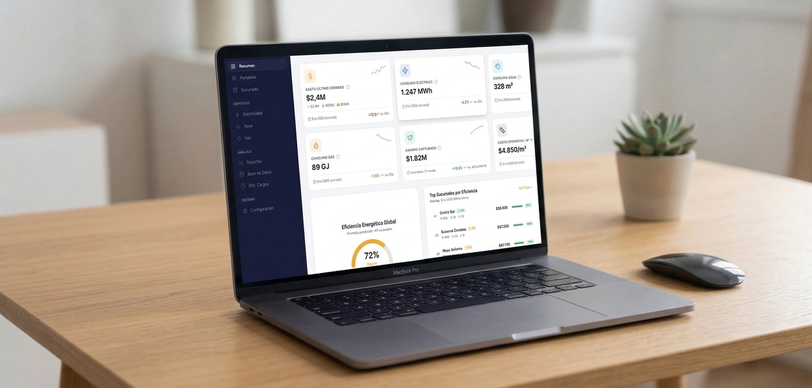
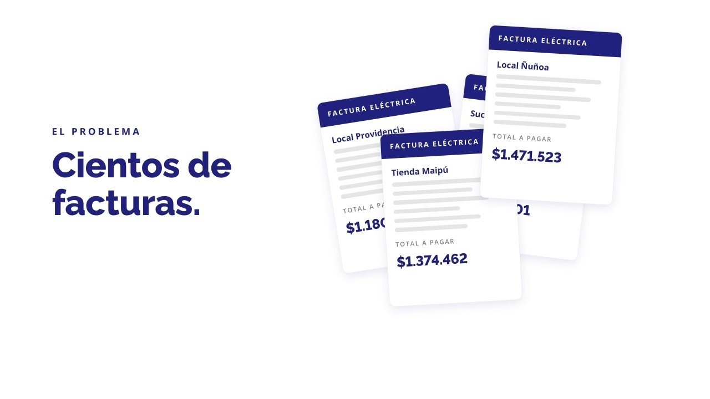
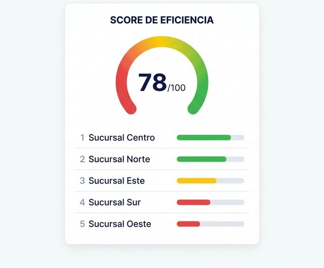

Auditamos tus facturas, corregimos cobros indebidos y te representamos ante las distribuidoras para que pagues solo lo que corresponde.

Errores de lectura, tarifas mal aplicadas y contratos desactualizados suben tu gasto sin que lo notes. Marca las señales que reconoces en tu operación.
0 de 6 señales
Solicita una revisión sin costo →Un Experto Clickie te acompaña en cada etapa.
Tus facturas de energía, agua y gas, en una sola plataforma.
Detectamos cobros indebidos y oportunidades de mejora.
Gestionamos correcciones y cambios de tarifa por ti.


Comparamos tus locales y priorizamos dónde está el ahorro.
Gestionamos la devolución de cobros indebidos.
Cambio a la tarifa más conveniente para tu perfil.
Prevenimos recargos por factor de potencia.
Detectamos sucursales que operan sobre la norma.
Negociamos con distribuidoras y centros comerciales.
Te avisamos cuando una factura se desvía.
Reporte ejecutivo mensual: gasto, variaciones y prioridades por sucursal.
Seguimiento de gestiones: estado y respaldo de cada caso abierto.
Una sola fuente: Finanzas, Operaciones y nuestros expertos ven la misma información.
Una tienda registraba consumos que no calzaban con su equipamiento ni con locales similares de la cadena. Comparamos facturas, medimos en terreno y confirmamos lecturas mal ingresadas por el centro comercial desde enero de 2024. Documentamos los hallazgos y gestionamos la corrección con el mall.
Descarga el checklist con lo que conviene revisar en cada factura y qué pedir cuando la energía viene en los gastos comunes.
Con las facturas de los últimos 12 meses de cada local podemos partir. Si las tienes en el portal de la distribuidora, podemos tomarlas desde ahí con tu autorización.
Sí. En esos casos solicitamos a la administración las lecturas, el precio aplicado y el método de cálculo de áreas comunes, y auditamos ese cobro igual que una factura de la distribuidora.
Cómo revisar cobros en centros comercialesPrimero pedimos el detalle a la administración. Si no existe medición, evaluamos instalar un medidor en el local para tener un dato propio y comparable.
La auditoría inicial de facturas no tiene costo.
UBM (Utility Bill Management) es un servicio que digitaliza y revisa tus facturas de energía, agua y gas para detectar cobros incorrectos, optimizar tarifas y gestionar las correcciones con distribuidoras, centros comerciales o proveedores.
Trabajamos con facturas de energía eléctrica, agua y gas, tanto de distribuidoras como de centros comerciales o administraciones que cobran los consumos de tus locales.
Lo documentamos con respaldo, gestionamos la corrección o devolución con quien emite la factura y registramos el estado de cada caso en la plataforma para que Finanzas y Operaciones puedan seguirlo.
Nuestros clientes ahorran hasta un 15% de su gasto energético. El resultado depende de tu operación, tus tarifas y los errores que encontremos en la facturación.
La auditoría inicial de tus facturas no tiene costo. Cuéntanos cuántos locales tienes y te decimos qué información necesitamos para partir.
Déjanos tus datos y te contactamos.